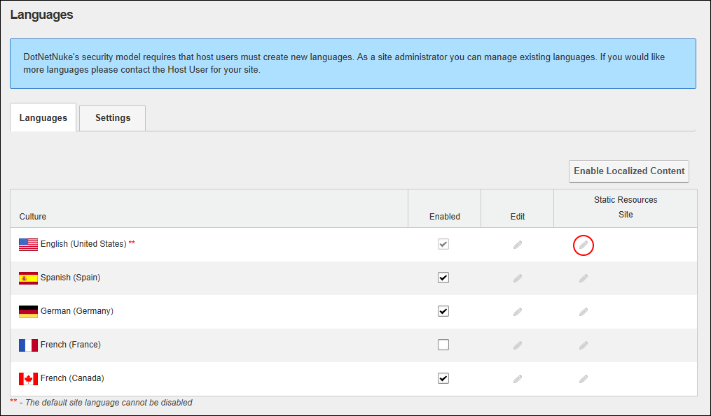
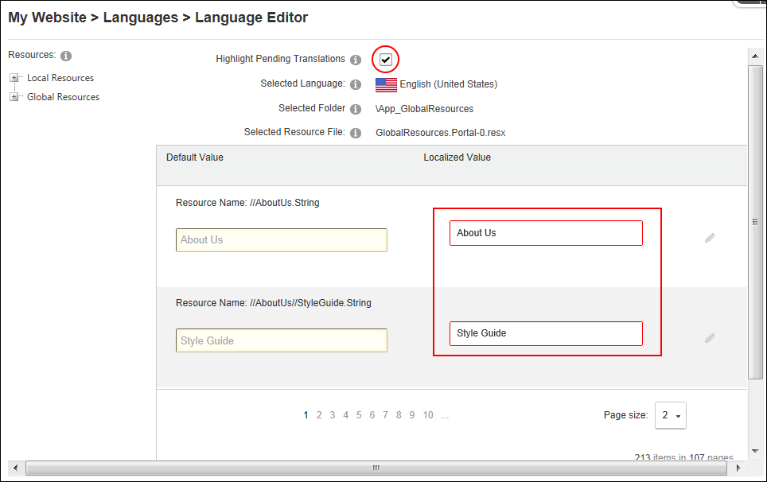
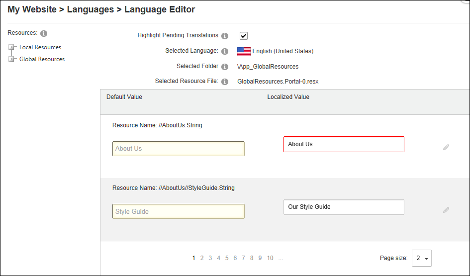

Setting Language Files as Pending Translation
How to set the values (language files) associated with a language package as pending translation using the Languages module. DNN Platform users (including anonymous users) must be granted Edit Module permissions. Evoq Content users (including anonymous users) must be granted Edit Content permissions.
- Navigate to Admin > Advanced Settings >
 Languages - OR - Go to a Languages module.
Languages - OR - Go to a Languages module.
- Select the Languages tab.
- In the Static Resources - Site column of the Culture grid, click the Edit
 button for the language file to be edited. This displays the GlobalResources file ready for editing.
button for the language file to be edited. This displays the GlobalResources file ready for editing.

- At Highlight Pending Translations, to set all values as pending translation. This highlights the Localized Value text boxes in red making it easy to identify that they are pending translation.

- To edit a resource file, perform one of the following options:
- In the Localized Value text box, edit the text.
- Click the Save Resource File button to save your changes. This will remove highlight from the translated files.
- OR - - Click the Edit button. This displays the message "All unsaved changes will be lost if you continue. Are you sure you want to continue?"
- In the Editor, enter the new text ensuring you include the desired replacement tokens displayed at Default Value.
- Note: The red highlight is removed from the box each time you update a value using the Editor.
- Repeat Step 5 to edit additional files.

- At Highlight Pending Translations, once translations are completed - OR - to maintain the highlighted of files for future translation.
- Click the Return button.
Tip: Whenever you select "Highlight Pending Translations" each of the fields that haven't been translated are once again hightlighted.